01
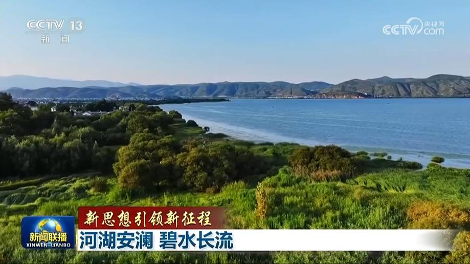
【新思想引领新征程】河湖安澜 碧水长流
习近平总书记强调：“保护江河湖泊，事关人民群众福祉，事关中华民族长远发展。”全面推行河长制十年来，从每条河流有了责任人，到上下游、左右岸、干支流协同治理，这项重大制度创新深刻改变着中国江河的面貌和治理方式，水清岸绿的河湖正成为老百姓身边可感可及的幸福。


习近平总书记强调：“保护江河湖泊，事关人民群众福祉，事关中华民族长远发展。”全面推行河长制十年来，从每条河流有了责任人，到上下游、左右岸、干支流协同治理，这项重大制度创新深刻改变着中国江河的面貌和治理方式，水清岸绿的河湖正成为老百姓身边可感可及的幸福。
当地时间11月27日，由中国中央广播电视总台制作的专题片《习近平的文化情缘》在斯里兰卡科伦坡启播。
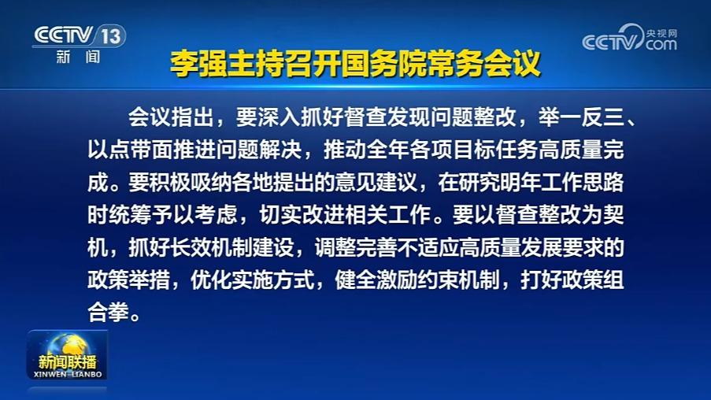
国务院总理李强11月27日主持召开国务院常务会议，听取推动高质量发展综合督查情况汇报，研究持续深化资本市场投融资综合改革工作，听取国家标准体系建设情况汇报，审议通过《生产安全事故隐患排查治理条例（草案）》。
国务院总理李强将于12月2日上午在福建省厦门市同新开发银行行长罗塞芙、世界银行行长彭安杰、国际货币基金组织总裁格奥尔基耶娃、世界贸易组织总干事伊维拉、联合国贸易和发展会议代理秘书长马雷诺、国际劳工组织助理总干事汤普森、经济合作与发展组织秘书长科尔曼、国际清算银行总经理德科斯、金融稳定理事会主席贝利和亚洲基础设施投资银行行长邹加怡等国际经济组织负责人举行“1＋10”对话会。……
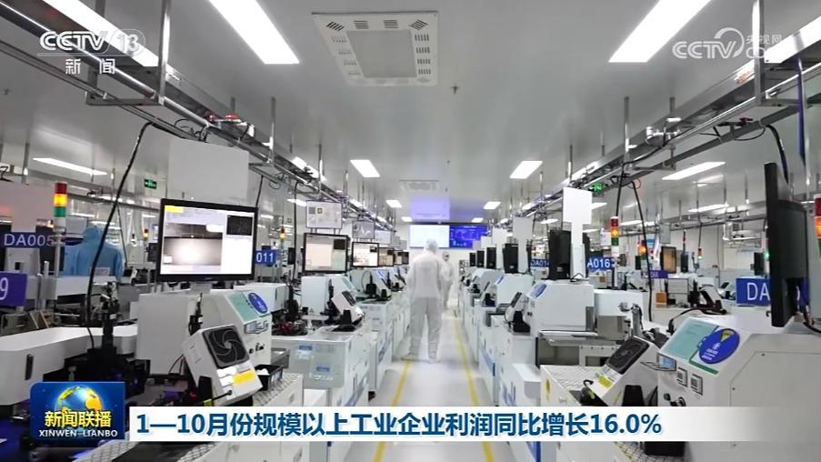
国家统计局今天（11月27日）发布的数据显示，1—10月份全国工业生产总体平稳，在新动能快速成长带动下，规模以上工业企业利润保持较快增长，共实现利润总额67373.6亿元，同比增长16.0%。
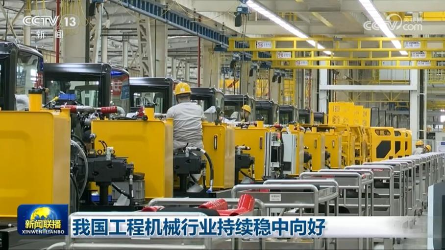
记者从中国工程机械工业协会了解到，今年以来，工程机械行业保持增长，行业整体延续稳中向好运行态势。
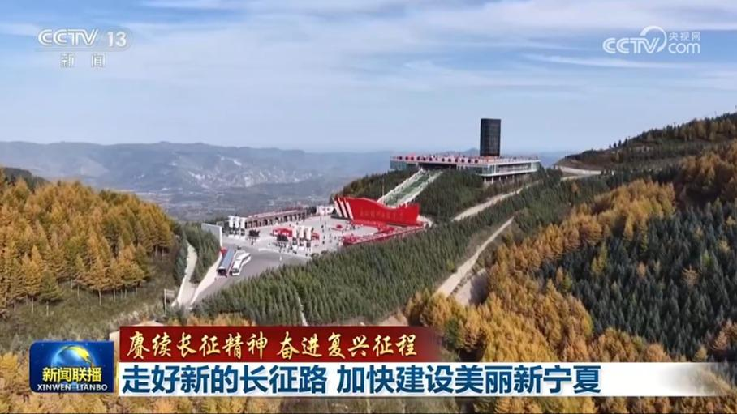
宁夏是一片红色热土，红军长征和西征都曾转战这里，也是红军长征胜利会师地之一。今天的宁夏，大力弘扬伟大长征精神，美丽新宁夏建设不断展现新气象。
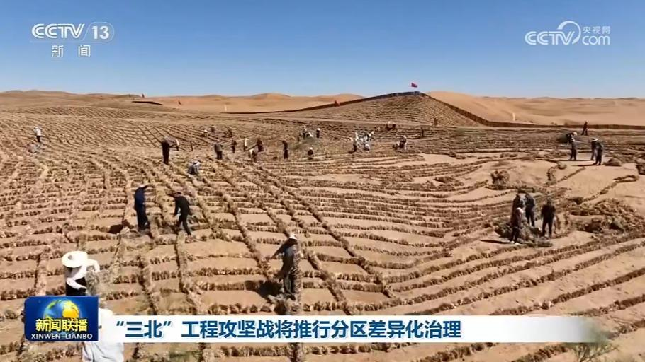
记者从国家林业和草原局了解到，今年，“三北”工程攻坚战取得明显成效。全年安排中央投资277亿元，实施重点项目328个，目前已完成各类建设任务6874万亩，进度为92.3%。
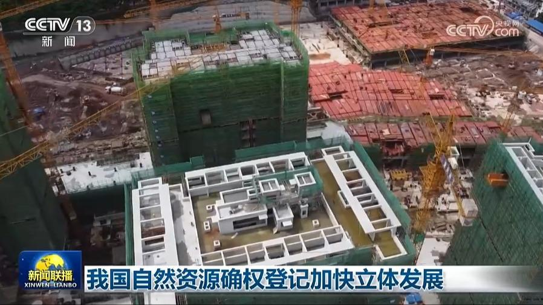
今年以来，我国自然资源和不动产统一确权登记加快立体发展，登记对象由地上向地下、海域等空间不断延伸。
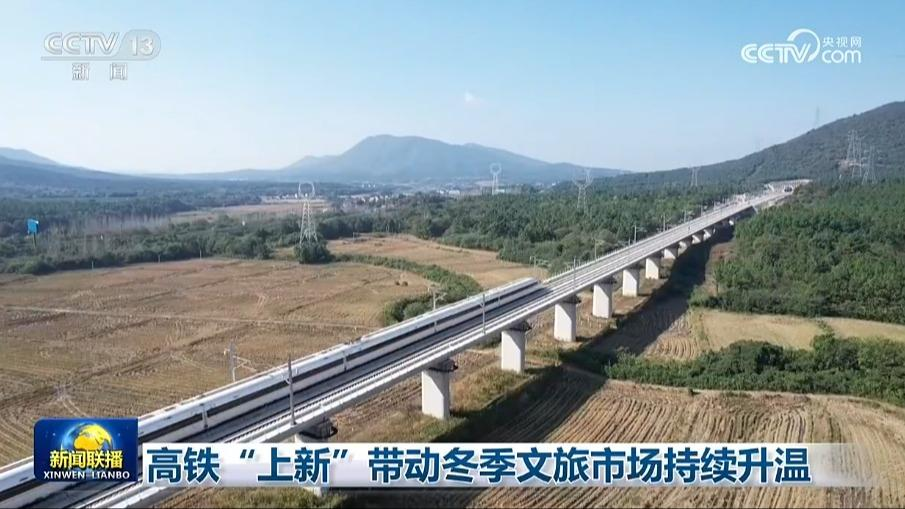
今年以来，我国铁路建设投资保持增长态势，多条高铁新线密集开通，便利沿线群众出行，有效盘活当地文旅资源，带动冬季旅游市场持续升温。
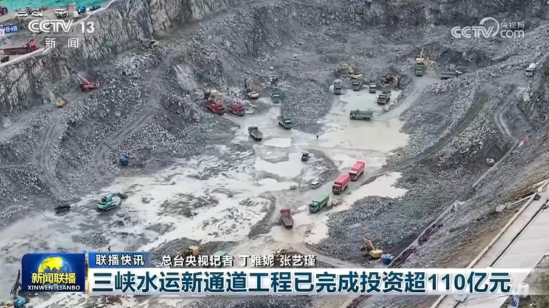
五部门部署推进技工教育高质量特色发展
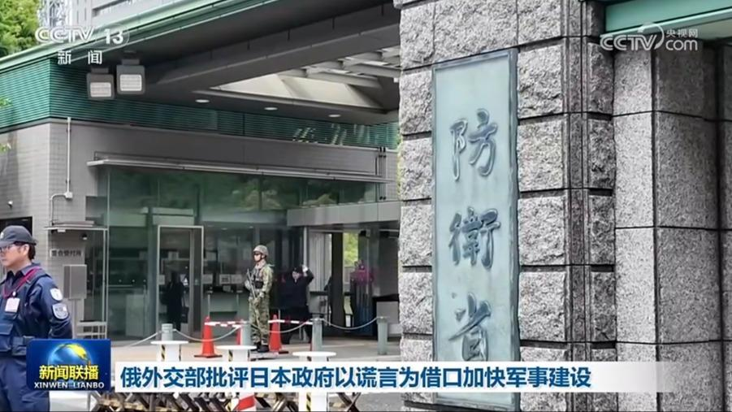
据日本媒体25日到26日报道，日本政府计划于年内修订的“安保三文件”之一——《防卫力整备计划》的指导方针已初步明确，其中提出引进可搭载在舰艇上的新型远程反舰导弹。日本政府还计划大幅提高未来五年防卫费总额。针对日本政府近期一系列扩军举措，俄罗斯外交部发言人扎哈罗娃26日表示，日本防卫大臣小泉进次郎以所谓“来自外部的威胁”为由鼓吹加快军事建设，这种言论毫无根据，俄方呼吁日本政府回到和平发展道路上来。
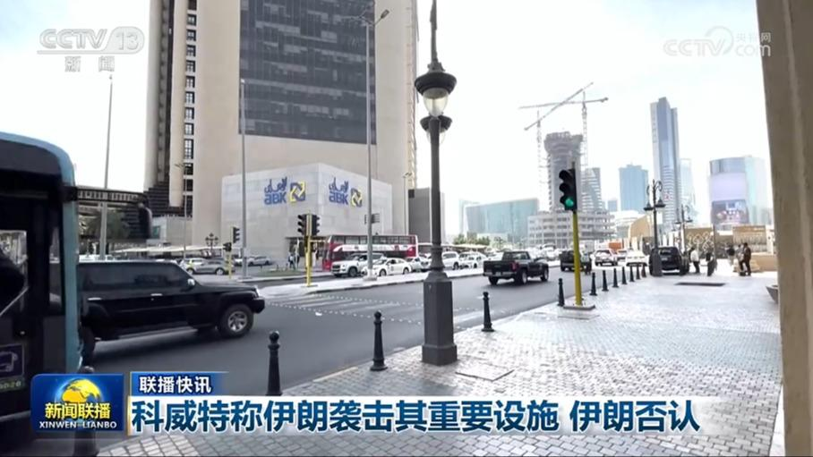
科威特称伊朗袭击其重要设施 伊朗否认